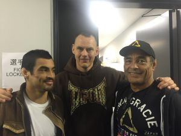

Braziliaans Jiu Jitsu is een bijzonder slim systeem van bewegingen, waarbij je optimaal gebruik maakt van je eigen sterke punten en juist de zwakke punten van je tegenstander. Met BJJ kun je zelfs een veel grotere en sterkere tegenstander verslaan, door hem in een klem of een verwurging te manoeuvreren. Hoe groot of sterk hij ook is, hij is dan volstrekt machteloos. Hiermee onderscheidt BJJ zich van bijvoorbeeld karate/kung-fu/taekwondo en kickboksen, waarbij je een tegenstander probeert uit te schakelen door te slaan of te trappen. Dat is een stuk risicovoller voor jezelf. Want zo’n tegenstander vecht zolang hij niet KO is natuurlijk wél terug en al die tijd ben je zelf in gevaar.
Als zelfverdediging is BJJ veel flexibeler, want je kunt een opponent volledig controleren, zelfs zonder hem te “beschadigen”. Maar je kunt hem ook in een paar tellen volledig uitschakelen, als de situatie daarom vraagt. Ook goed om te weten: BJJ is de enige zelfverdedigingsport waarin het grondgevecht volledig wordt beheerst. En 80% van alle gevechten eindigt op… de grond. (Mensen praten over gevechten niet voor niets in bewoordingen als “… en opeens rolden ze over de grond”.) In BJJ leer je bijvoorbeeld ook valbreken. Je bent daarnaast met je hele lichaam bezig en traint op die manier vrijwel alle spieren in kracht, flexibiliteit en uithoudingsvermogen.
In BJJ leer je bijvoorbeeld ook valbreken. Je bent daarnaast met je hele lichaam bezig en traint op die manier vrijwel alle spieren in kracht, flexibiliteit en uithoudingsvermogen Een ander voordeel van BJJ is dat je voluit kunt sparren zonder blessures. Dit is van onschatbare waarde om de technieken ook in een realistische situatie toe te leren passen. Namelijk op een tegenstander die niet stilstaat of meewerkt! Precies op dit punt gaan bijvoorbeeld de meeste Oosterse “martial arts” hopeloos de mist in en dat zie je ook altijd terug als het erop aankomt*. Je kunt honderd keer in de lucht of tegen een bokszak trappen, maar dat zegt niks over hoe je het er tegen een echte tegenstander vanaf brengt. Allemaal argumenten om BJJ te trainen. Maar misschien nog wel belangrijker: het is enorm leuk om te doen De BJJ-trainer is Maxim Leijdekker. Maxim is zelf een oud-topvechter (zie ook: geschiedenis) en een internationale toptrainer. Van o.a. de beste MMA-vechter ooit: Fedor Emilianenko.